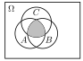
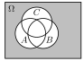
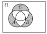
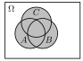
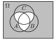
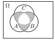
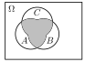
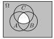
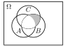
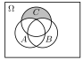

Aufgabe 2.5
$A$, $B$, $C$ bezeichnen drei Ereignisse der Ergebnismenge $\Omega$. Man beschreibe folgende zusammengesetzten Ereignisse mengenalgebraisch.
- Alle drei Ereignisse treten ein.
- Keines der drei Ereignisse tritt ein.
- Genau eines der drei Ereignisse tritt ein.
- Mindestens ein Ereignis tritt ein.
- Höchstens ein Ereignis tritt ein.
- Genau zwei Ereignisse treten ein.
- Mindestens zwei Ereignisse treten ein.
- Höchstens zwei Ereignisse treten ein.
- Nur die Ereignisse B und C treten ein.
- Nur das Ereignis C tritt ein.
- «Genau k» bedeutet: Exakt k Ereignisse treten ein, nicht mehr und nicht weniger
- «Mindestens k» bedeutet: k oder mehr Ereignisse treten ein
- «Höchstens k» bedeutet: k oder weniger Ereignisse treten ein
- «Nur X tritt ein» bedeutet: X tritt ein, alle anderen nicht
- Nutzen Sie die Komplemente $\overline{A}$, $\overline{B}$, $\overline{C}$ für «tritt nicht ein»
Systematisches Vorgehen mit Venn-Diagrammen:
(a) Alle drei Ereignisse treten ein

(b) Keines der drei Ereignisse tritt ein

(c) Genau eines der drei Ereignisse tritt ein

(d) Mindestens ein Ereignis tritt ein

(e) Höchstens ein Ereignis tritt ein

Sei $D = (A \cap \overline{B} \cap \overline{C}) \cup (\overline{A} \cap B \cap \overline{C}) \cup (\overline{A} \cap \overline{B} \cap C)$ $$\boxed{(\overline{A} \cap \overline{B} \cap \overline{C}) \cup D}$$
(f) Genau zwei Ereignisse treten ein

(g) Mindestens zwei Ereignisse treten ein

Sei $E = (A \cap B \cap \overline{C}) \cup (A \cap \overline{B} \cap C) \cup (\overline{A} \cap B \cap C)$ $$\boxed{(A \cap B \cap C) \cup E}$$
(h) Höchstens zwei Ereignisse treten ein

(i) Nur die Ereignisse B und C treten ein

(j) Nur das Ereignis C tritt ein
